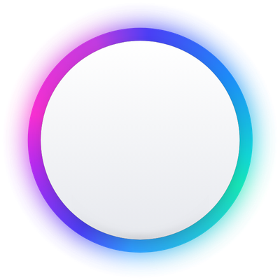
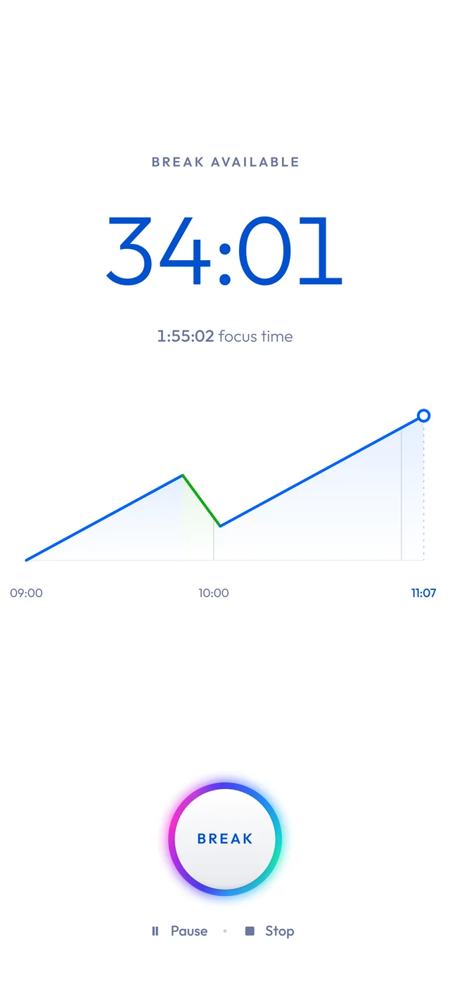
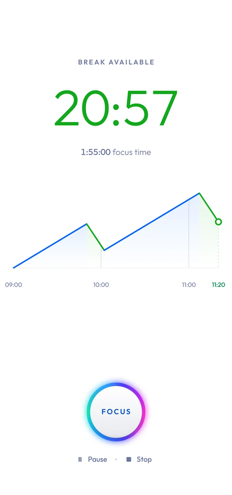
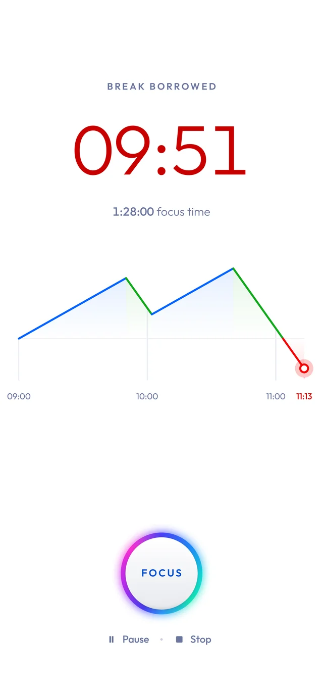

Magic ClockStop procrastinating.
Earn your breaks.
If you sit down to something you know will be boring, it creates a small amount of stress.
The right way out is to do the thing: you work, and the relief comes afterwards. It’s how nature works: you get hungry, hunger drives you to hunt, and relief comes when you’ve eaten. Nature doesn’t reward you for intending to hunt.
The easy way out is to pick up the phone and start scrolling. The relief comes first, but the work never does. Do that once and it’s just a Tuesday. Do it for a year and you’ve trained your brain that relief comes without effort.
People might call you lazy now. But you don’t believe them. That’s probably why you’re here. You just need to get your brain’s reward system back on track.
Magic Clock
Magic Clock turns it around. You focus for a while and earn your break time — ten minutes for every twenty-five you work (based on Pomodoro).
Now you can spend your break on all the things you were using to avoid the work — scroll Instagram, watch YouTube, check Reddit, play a game, grab a coffee, or whatever feels rewarding to you.



This way, you’re teaching your brain that reward comes after the work — and that sustained focus is something worth doing.
What to expect
On the first day, some people can focus for 30 minutes straight. Others struggle to get 5 minutes in without reaching for their phone. Both are normal starting points.
Take your breaks whenever you feel like it. After an hour, great. After 5 minutes, also fine. Use as much of your earned break as you like. If you overspend, you simply have to work it back.
Over time, it gets easier. At some point, you might even start enjoying the boring work and stop taking your breaks altogether. That’s when you have to be careful.
Take your breaks, even when you don’t feel like you need them. Otherwise, you burn yourself out quickly — or end up working with no reward attached, which puts you right back where you started.
It’s like hitting the gym in January. In the first week, you go three times. Then you ride the wave of excitement and go seven times the next week. But when the excitement is gone, you never go again.
You’ll never build a habit if you let yourself get carried away by the excitement wave.
And eventually, you notice that it worked. You spend a sunny Sunday studying for an exam without complaining. You do your tax return without hesitation. You start enjoying exercise.
You might still scroll. But now you do it on purpose instead of falling into it.
The rules
- Earn your breaks. Focus time means focus time and nothing else.
- Take your breaks. Even if the day is almost over and you’ve saved up a long break.
- Make your breaks enjoyable. Cleaning, cooking, and writing emails are not how you spend a break.
- Do it 4+ hours a day. You need to invest some time each day to see a real difference.
- Don’t break the chain. Do it every day. Consistency is what makes it a habit.